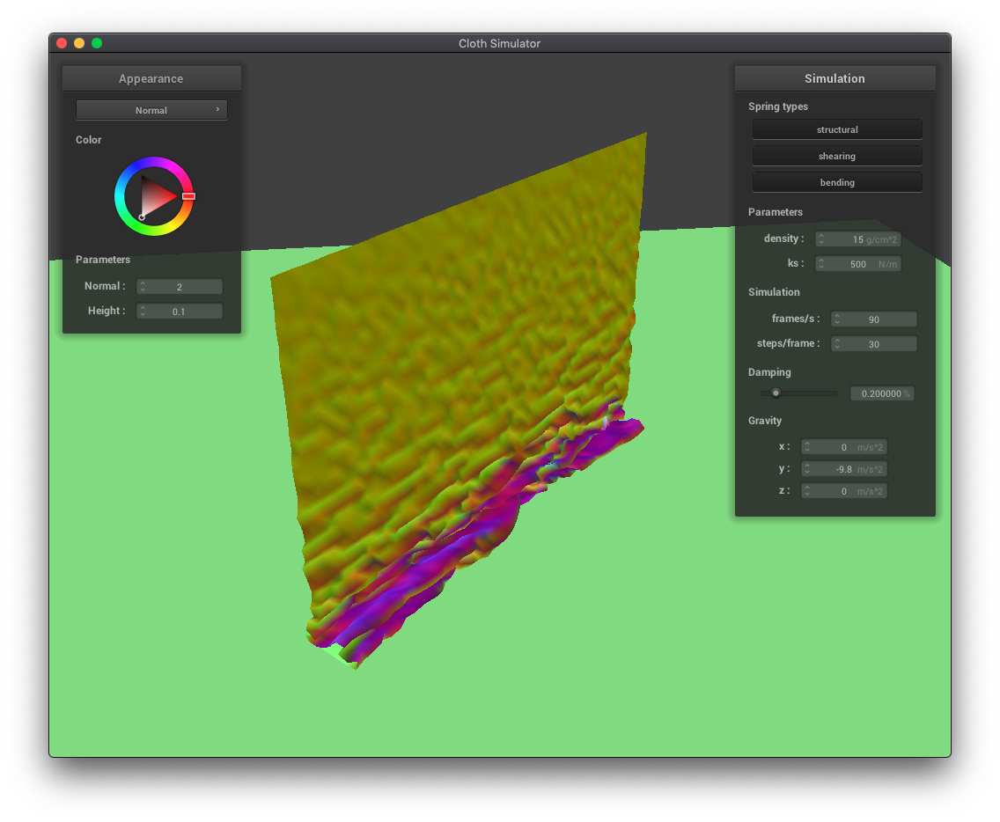
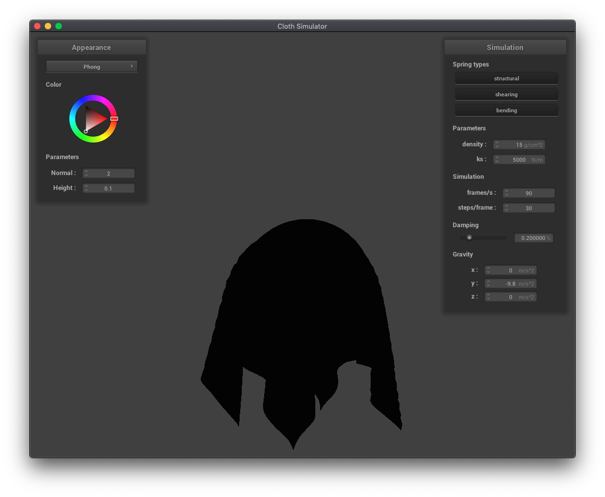
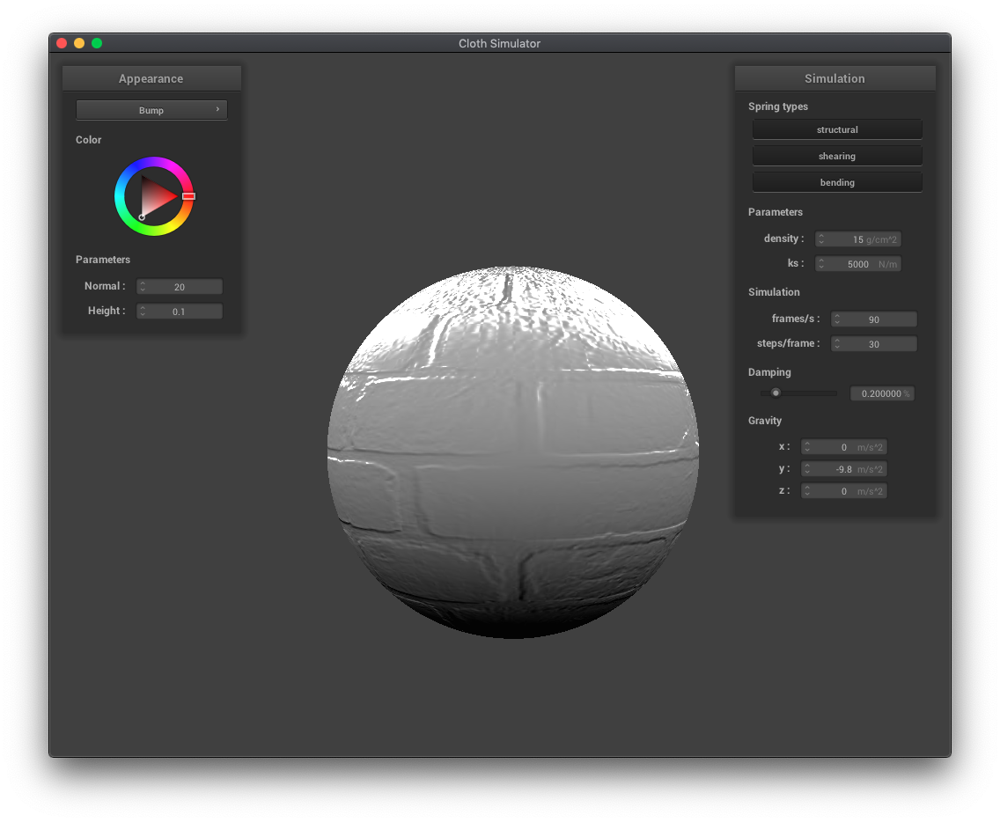

**This is from a UC Berkeley course project, so the source code is not publicly viewable. If you are an employer interested in viewing my project code, please contact me privately.**
In this project, I implemented a cloth simulation. I enjoyed this project because while it was focused on particle simulation, it covered a variety of different topics from throughout the course such as approximation models (Verlet integration), calculating intersection points, finding ways to improve efficiency (spatial hashing), lighting, and textures. Debugging the project also produced a variety of visually interesting bugs when the cloth would unintentionally become a writhing rainbow mass. I also enjoyed creating shader programs and learning more about how they worked because I had heard about them before but never actually worked with them.
In this part, I modeled the cloth as a set of point masses connected by different types of springs. The three types of springs were structural (forming the grid), shearing (between diagonal point masses), and bending (forming a grid between alternating point masses).
|
|
|
The next step was to simulate the forces on the cloth. I calculated the forces (both from external forces like gravity and from springs) and used Verlet integration with some damping to approximate the new positions of the point masses. I also applied a correction to the point mass positions which constrains the distance between 2 points connected by a spring to be at most 10% greater than the spring's rest length based on this paper.
The spring constant ks determines how stiff or bouncy a spring is, and is a multiplicative factor in the calculation of the force a bending spring exerts on its masses. A larger ks means more stiff, requiring more force to move, so the cloth falls with less ripples than cloth with a lower ks.
The density parameter determines how heavy the cloth is per unit area. Cloth with a higher density is more bowed down because the force of gravity acts more on objects with greater masses.
The damping factor is used to estimate loss of energy to friction and heat loss and scales down the velocity used to calculate a new object position. A higher damping factor means more energy is lost, resulting in a smoother, less rippled falling cloth. This is similar to increasing the spring constant.
In this part, I implemented collisions between the cloth and spheres and planes.
In these examples of cloth draping over a sphere, we can see the effects of varying the spring constant ks. A lower ks results in more folds and the cloth draping more vertically than horizontally. A higher ks, corresponding to more force needed to move the springs, results in less folds and more stiff horizontal movement.
In this part, I implemented self-collisions so that the cloth wouldn't clip with itself. Since it would be too expensive (n^2 time) to check ever pair of point masses to see if they were too close together, I used a spatial hashmap, grouping point masses into sets of nearby point masses. Then, for each point mass, I would only test point masses which hashed to the same, spatially close set, greatly reducing the computational requirements.
|  |
||
As expected, reducing the spring constant makes the cloth more bouncy, resulting in smaller, more folds.
Decreasing the density makes the cloth fall in smoother, larger folds.
A shader program allows one to specify the color, affected by lighting, at a position of a 3D object, optimized to be processed in parallel using a GPU. In this project, we used OpenGL Shading Language (GLSL) shaders, and a shader program consists of a linked vertex shaders and fragment shaders. Vertex shaders specify transformations of vertices, modifying geometric properties like positions and normals to be used by fragment shaders, which output a color for that position. In most of the shaders for this project, the code modified was the fragement shader, but for the displacement shader, the mesh geometry had to be changed, so vertex shader code was modified as well.

The Blinn-Phong shading model separates lighting effects into 3 separate components: ambient (constant base color), diffuse (shading independent of view direction but dependent on source direction), and specular (intensity reflections that depend on view direction).
|  |
 |
Displacement mapping and bump mapping both produce texture patterns, but displacement mapping actually modifies the vertex positions in the vertex shader while bump mapping only modifies the normals in the fragment shader. You can see the vertices have moved in the displacement mapping examples below. Increasing the resolution of the sphere increases the jaggedness of the displacement mapped texture.
|  |
Mirror shader
 |